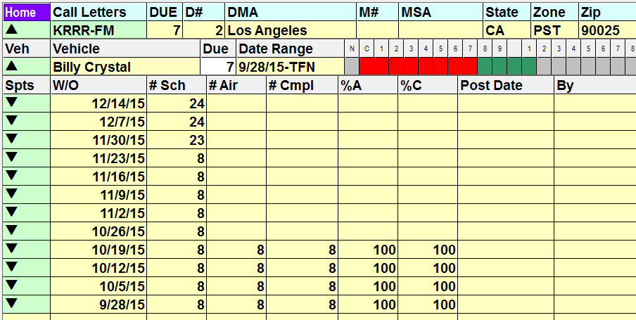

Affiliate Management Screen Guide
Color Definitions
The different colored fields in the Affiliate Management Screen are visual clues as to what you can and cannot do in each field. In addition to the brief description below, you can also click on the key icon in the bottom left corner of the screen for more information about what all of the colors and codes mean.
- Light blue column headings will change the way your data is sorted.
- Light green fields will bring you to another screen to view additional information, such as the Station or Agreement screens. The access you have to these additional screens is determined in your User Options settings.
- Yellow fields are view-only, and cannot be altered (on this screen).
- Grey fields contain no data.
Header Definitions and Tooltips
All of the information in the header is pulled from what has been entered for the different stations on the Stations screen.
Additional information can be seen about numerous fields by holding the mouse over the field, which will display a tooltip. For example, when holding the mouse over the Call Letters, the call letters, band, frequency, and moniker will be shown in a tooltip, as shown in the picture below.
Some fields display an asterisk or a letter, and holding the mouse over the field will display a tooltip with more information as described below:
- OPR (Operator): If the station is operated by a party other than the owner, an asterisk will appear in the OPR field. The tooltip displays the name of the operator.
- SIST (Sister Station) and CAST (Multicast): If the station is part of a Sister Station Group, Multicast Group, or both, an asterisk will appear in the appropriate SIST (Sister Station) or CAST (Multicast) fields. The tooltip shows the call letters of all the stations in the group.
- P/W (Password): There will be an asterisk in the P/W (Password) field if the station has a password that is used to sign on to the Counterpoint Affidavit system. The tooltip shows the password. Starting with version 8.1, if web version 3 is used, then this column is not shown, as web version 3 requires individual passwords for each station user account.
- WEB: If there is a “W” in the Web column, hovering over the column will display a tooltip showing the station’s website address. Clicking on the W will take you directly to the website. (This URL is pulled from the Stations screen Interface tab, Web Address field.)
- AGR (Agreement): A letter “A” in the AGR (Agreement) field indicates that at least one agreement exists for this affiliate that is now active or starts in the future.
- A letter “I” indicates that no agreements are active, but at least one was active in the last year.
- An “X” indicates that there were once agreements with this station, but none have been active within the last year.
- If the column is blank, the system has no information that this station has ever been an affiliate.
- Clicking on the agreement cell will bring you to the Agreements screen where you can view all of the agreement’s particulars, or add new agreements.
- CMT (Comment): A letter “C” in the CMT (comment) field indicates that there are comments associated with this affiliate. Click the cell to bring up the Comments screen.
Affiliate Management Screen Information
The main screen shows basic information about each station. Initially, the stations are sorted in call letter sequence by can be sorted differently by clicking any of the light blue column headers.
Throughout this screen, the view can be expanded or contracted by clicking the small triangles that appear in the far left column.
For example, when basic station information is shown, clicking the triangle next to the Call Letters field will expand the view to show the vehicles affiliated with the station.
Click the arrow next to the vehicle to expand the view to show the individual weeks for that vehicle.

The week view can be expanded to show the individual spots for the week, as shown below.
To navigate back to a previous level, click the arrow pointing up.
Press the purple Home button to return to the list of stations.
Due
The Due number shown at the station and vehicle level is the number of weeks with affidavits that have not been returned out of the last 52 weeks, showing at a glance how far behind a given station is in returning affidavits.
When viewing station level data, the Due number is pulled from the vehicles affiliated with that station with the most number of affidavits that have not been returned. When viewing vehicle/agreement level data, it shows how many weeks (out of the last 52) have not been returned for that vehicle and station.
The due value can also be filtered on using the “affidavits due” filter criteria on the Filter screen (described later in this document in more detail).
Station Toggle
When on the list of stations (accessed when first entering the screen or when pressing the Home button or when pressing the up triangles to get back to the main view), you can toggle between viewing All Stations, Assigned, All Affiliates, and Non-Affiliates by clicking the toggle in the bottom left corner and selecting one of the choices. This will allow you to target and view specific stations.
Searching for Stations
You can look up a particular affiliate by typing its call letters in the Call Letter Search field.
Once you do this, the list of stations will jump to those call letters, followed with all stations below in alphabetical order. To return to the top of the list, either click “Home” in the upper left corner, or use the scroll bar on the far right side to scroll back to the top.
Accessing the Stations Screen
Clicking on a station’s call letters will open the Stations screen, where you can view all of the station’s information.
To return to the Affiliate Management Screen, click Cancel in the bottom right corner.
Station Email
The Station Email button (at the bottom of the screen) allows you to send customized emails directly from the Affiliate system.